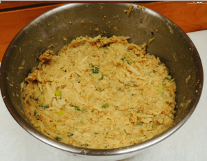

Siempre intentamos ofreceros diferentes tipos de platos con un con un toque diferente. Por ello hoy os traemos una receta un tanto especial, la cual en este caso es un plato salado elaborado solo con verduras y unos pocos ingredientes más, que citaremos a continuación. La elaboración de este plato es muy sencilla, económica y saludable, siempre que no nos pasemos con la cantidad de su ingrediente especial, ¡claro está! Así que poneros el delantal, porque hoy vamos a preparar un fantástico pastel de verduras con marihuana.
Antes de empezar
Recordar que la receta que vamos a cocinar contiene mantequilla de marihuana, la cual previamente hemos tenido que preparar, ya que su proceso de elaboración es un poco más largo. Para los que todavía no saben cómo preparar mantequilla de marihuana, os dejamos este enlace directo a su propia receta, para que podáis preparar este y otros muchos platos cannábicos con carácter recreativo y medicinal. Una vez dicho esto, vamos a comenzar con los ingredientes necesarios para preparar este sabroso plato..
Ingredientes Pastel de verduras con marihuana:
- 1 zanahoria
- 1 cebolla pequeña
- 1/2 calabacín
- 1/2 pimiento rojo
- 250g de harina
- 35g de mantequilla de marihuana
- 4 huevos
- 15g de levadura en pastilla
- 80g de queso rallado
- Aceite y sal
Elaboración Pastel de Verduras con Marihuana:
- Paso 1: Troceamos todas las verduras y las salteamos en una sartén a fuego lento con un poco de aceite y sal.
- Paso 2: Derretimos la mantequilla de marihuana en el microondas y la dejamos enfriar.
- Paso 3: Ahora preparando la masa del pastel. En un bol colocamos la harina, la levadura y los huevos y lo mezclamos bien, a continuación añadimos la mantequilla derretida y la sal.
- Paso 4: Echamos las verduras y un poco de queso a la masa, mezclando bien para que las verduras queden repartidas por todo el pastel. Lo colocamos en un molde apto para horno, espolvoreamos el resto de queso por encima, y horneamos unos 30-40 min. a 170ºC, bajando un poco el la temperatura del horno para que el queso no se queme.
- Paso 5: Cuando el pastel adquiera un aspecto dorado y esté totalmente hecho por dentro, lo sacamos del horno y lo dejamos enfriar.
- Paso 6: Ahora solo queda presentarlo y sentarse a disfrutar de su delicioso sabor y efecto.